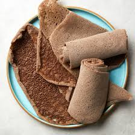
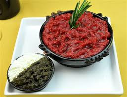

Delicious Ethiopian Cuisine
Embark on a culinary journey through Ethiopia and discover a rich palette of flavors that define traditional Ethiopian cuisine. From the soft, spongy texture of Injera, made from the indigenous teff grain, to the robust spices of Doro Wat, each dish offers a unique taste and story. Explore an array of other specialties like Kitfo, a delicacy of minced raw meat seasoned with spicy mitmita.
Below is a video demonstrating how Injera is made, providing a glimpse into the art of Ethiopian cooking:
Explore More Ethiopian Dishes
Injera
Injera is a staple Ethiopian flatbread known for its soft, spongy texture and tangy flavor. Made from teff flour, it serves as both a plate and utensil in Ethiopian dining, complementing various stews and dishes.
Doro Wat

Doro Wat is a spicy Ethiopian chicken stew made with berbere spice blend, onions, garlic, and hard-boiled eggs. It is often served with Injera and is a cornerstone of Ethiopian cuisine, enjoyed during festive occasions.
Kitfo
Kitfo is a traditional Ethiopian dish made from minced raw meat, typically beef, seasoned with spices like mitmita and often served with a side of cottage cheese and greens. It offers a unique and flavorful experience for adventurous eaters.
Ethiopian Coffee
Ethiopian coffee is renowned for its rich, complex flavors and is often considered the birthplace of coffee. The traditional Ethiopian coffee ceremony is a unique cultural experience, involving the roasting, grinding, and brewing of coffee beans right before serving.